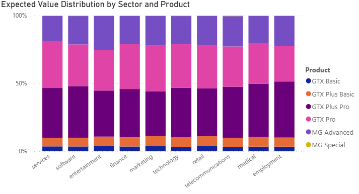
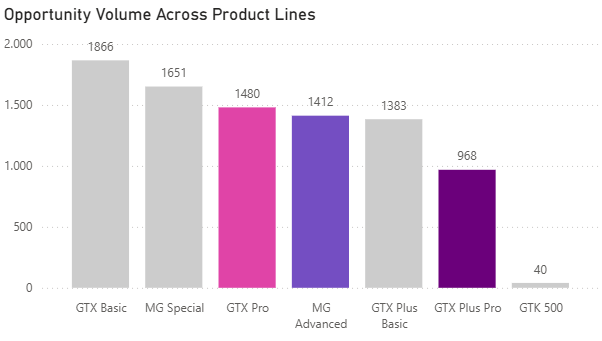
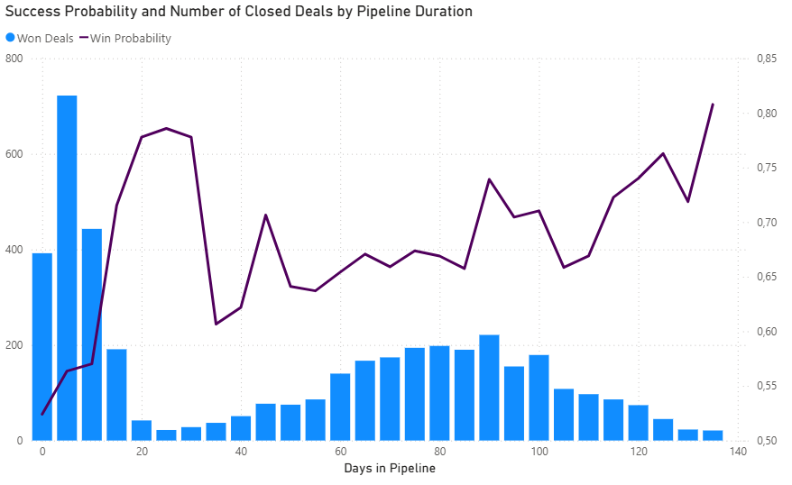
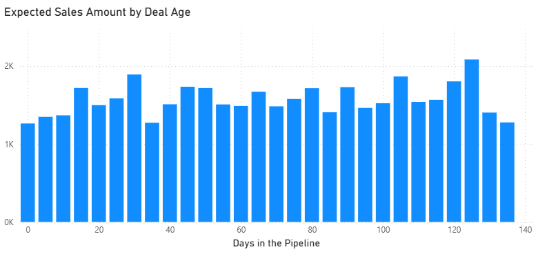
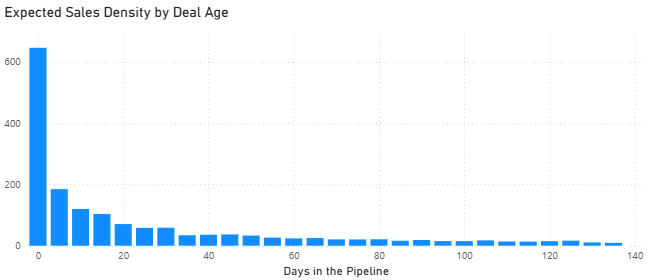

HEITOR DE SOUZA
Data Analysis | SQL | Power BI
Data Analysis | SQL | Power BI
Aspiring Data & Business Analyst with a strong focus on SQL, currently developing practical portfolio projects to solve real business problems.
Project: CRM Sales Pipeline & Efficiency Optimization
Executive Summary
In a competitive B2B landscape, a sales team's most valuable resource is time. This project analyzes CRM data to identify the "Sweet Spot" for sales operations—the specific combination of industries and products that yield the highest win rates with the shortest sales cycles. By identifying where the pipeline stalls and where it thrives, this analysis provides actionable recommendations to improve sales velocity and resource allocation for the upcoming quarter.
The Dataset
The analysis is based on a CRM Sales Opportunities dataset containing real-world B2B sales records. The data is structured into four primary dimensions:
Sales Pipeline: Tracking the journey of an opportunity from "Created" to "Closed" (Won or Lost).
Accounts: Detailed profiles of client companies, including industry, size, and location.
Products: A catalog of offerings and their respective price points.
Sales Teams: Data on individual agents and regional managers.
Questions
Key insights:
1) What does the data tell me? High Success at High Cost

The sales team scaled prospecting activity 300x over nine months, growing from 7 opened opportunities in October 2016 to 2,257 by July 2017. However, the heat map reveals a critical efficiency gap: while opportunity opening (red cells) accelerated rapidly, closure activity (green cells) lagged significantly behind. The first closures didn't occur until March 2017—five months after prospecting began—creating a pipeline buildup of 1,185 open opportunities.
The table tracks opened opportunities (new entries), closed opportunities (resolved deals), and "open opportunities on current month" (cumulative workload). By July 2017, the team managed 2,257 concurrent open opportunities as prospecting outpaced closure capacity. This backlog persisted through year-end 2017, with 1,500-2,500 open opportunities monthly from March onward despite steady closure activity, confirming that extended sales cycles became the operational norm.
| Deal Stage | Days Until Closure | Percentage of total |
|---|---|---|
| Won | 52 | 63.15% |
| Lost | 41 | 36.85% |
The organization achieved a 63,15% win rate across all opportunities, a strong conversion rate that suggests effective qualification and sales execution. However, this headline metric masks a costly inefficiency: lost deals consume an average of 41 days before disqualification, compared to 52 days for won deals. This 11-day difference appears modest, but the business implication is severe. Sales teams invest nearly 80% of a winning deal's timeline on opportunities that ultimately generate zero revenue.
| Deal Stage | Count of deals |
|---|---|
| Won | 4238 |
| Prospecting | 500 |
| Lost | 2473 |
| Engaging | 1589 |
This "Slow No" problem represents a significant drag on organizational productivity. With 36,85% of deals resulting in losses, the sales team spends roughly one-third of its total effort (approximately 41 days × 2.473 lost deals = 101.393 days of cumulative effort) on unproductive pursuits. When customer acquisition costs are factored in, the organization cannot afford to invest 6+ weeks nurturing deals destined to fail. The analysis that follows examines how product selection, pipeline velocity, and qualification rigor can reduce this efficiency gap and redirect resources toward high-probability, high-value opportunities.
2) Which combination of Product and Account Industry represents our most efficient 'Win' engine?
This analysis examines sales performance across products and sectors to identify the most efficient revenue drivers. By employing Expected Value (EV) as the primary metric and analyzing opportunity volume patterns, the study reveals that product selection, not market sector, determines sales efficiency. The findings challenge conventional volume-based sales approaches and identify specific products that generate maximum revenue with minimal resource investment.
Traditional sales metrics emphasize win rates, but this approach lacks critical context. A product achieving 100% conversion on $500 deals generates less business impact than a 50%-win rate on $2000 opportunities. This analysis uses Expected Value per deal as the core metric, calculated as:
Expected Value = Average Deal Size × Win Rate
This framework balances revenue potential with realistic close probability, providing a more accurate measure of sales efficiency than win rate alone. The analysis excludes GTK 500 from sector and volume comparisons due to limited sample size (0-4 deals per sector), which would reduce statistical reliability and skew results.
Finding 1: Product Drives Performance, Not Sector

The side-by-side comparison reveals the fundamental insight of this analysis. The left chart shows Expected Value across sectors, displaying remarkable uniformity: all industries generate between $1400-$1700 in EV with minimal variance. Entertainment leads slightly, but the differences are marginal and statistically insignificant. No sector demonstrates a clear competitive advantage.
The right chart tells a dramatically different story. Expected Value by product shows substantial variation, with GTX Plus Pro generating over $3500 per deal while MG Special barely registers. The top three products (GTX Plus Pro, GTX Pro, and MG Advanced) create a clear performance tier that separates them from the rest of the portfolio. This stark contrast between flat sector performance and dynamic product performance proves that what you sell matters far more than who you sell to.
The stacked bar chart provides deeper confirmation of this pattern. The internal product composition remains consistent across all industries. GTX Plus Pro (dark purple), GTX Pro (pink), and MG Advanced (light purple) dominate value contribution consistently. GTX Basic (orange) and MG Special (yellow) contribute minimally regardless of which industry they serve.
Finding 2: Quality Over Quantity
A counterintuitive pattern emerges when examining lead volume alongside Expected Value. The chart reveals an inverse relationship between opportunity volume and revenue efficiency. GTX Basic leads with nearly 1900 opportunities, followed by MG Special at approximately 1600. These high-volume products attract the most leads but, as established earlier, generate the lowest Expected Value per deal.
In contrast, the top revenue performers (highlighted) operate with significantly fewer opportunities. GTK 500, with minimal volume, represents the experimental category discussed earlier.
This represents the ideal sales scenario: fewer opportunities requiring less time investment while generating substantially higher per-deal returns. Rather than indicating weak demand, lower volume for premium products reflects superior lead quality and more efficient resource allocation. Sales teams pursuing GTX Basic's 2000 opportunities expend more effort for lower aggregate returns compared to focusing on GTX Plus Pro's selective but lucrative pipeline of 1000 higher-probability, higher-value deals.
Finding 3: Three Products Drive 80% of Revenue
After controlling for statistical significance, three products demonstrate superior performance across all metrics:
| Product | Performance Profile | Strategic Role |
|---|---|---|
| GTX Plus Pro | ~59% Win Rate | $3,200+ EV | The Gold Standard. High win rate with significant revenue. |
| GTX Pro | ~57% Win Rate | $2,700+ EV | The Engine. High volume and consistent reliability. |
| MG Advanced | ~56% Win Rate | $1,900 EV | The Bread & Butter. Solid returns with stable demand. |
These three products collectively account for over 80% of total revenue despite representing a fraction of the product catalog. Their combination of strong win rates, substantial deal sizes, and manageable opportunity volumes creates maximum sales efficiency.
3) At what point in the pipeline does a deal's probability of closing drop low enough to become a Red Flag?
Finding 4: Fast Losses Beat Slow Wins
Pipeline analysis reveals a counterintuitive W-shaped pattern that identifies three critical decision zones. Win probability (purple line) starts at 52%, climbs to 79% at day 30, drops to a concerning 61% around day 35, then recovers to 81% by day 135. However, the volume of won deals (blue bars) tells the real story—massive concentration in the first 15 days with over 700 closures, then a dramatic collapse to under 200 deals for the remainder of almost all the pipeline.
The warning signs intensify at day 35, where win probability hits its lowest point at approximately 61%. This represents the critical juncture where early-stage "doomed" opportunities haven't yet been disqualified. Deals lingering in the 35-50-day range face the highest abandonment risk and warrant immediate intervention or disqualification. The subsequent probability recovery after day 50 reflects survivor bias—only highly committed prospects remain, not improved deal quality.
More critically, any deal extending beyond 30 days enters efficiency red flag territory. While later-stage deals show higher win probabilities, the volume collapse proves these represent a tiny fraction of actual revenue generation. The data demonstrates that 78% of successful deals close within the first 30 days, making prolonged cycles statistically abnormal and resource-inefficient.
Despite declining volume, Expected Sales Amount remains deceptively stable around $1500-$2000 throughout the 140-day window. This stability creates a dangerous trap for sales managers. The metric suggests pipeline health regardless of deal age, masking the critical reality that aged deals consume disproportionate resources for equivalent expected output. A deal with $1500 expected value on day 5 requires one week of sales effort, while the same $1500 on day 50 has already consumed ten weeks—a tenfold difference in resource efficiency.
This stability paradox occurs because high-volume quick wins are replaced in aggregate value by fewer, higher-probability late-stage deals. The pipeline trades quantity for certainty, maintaining consistent weighted dollar value while actual opportunity count plummets. Sales teams monitoring only expected value will miss the efficiency collapse hidden beneath these stable numbers.
Revenue Density (expected sales amount divided by days in pipeline) exposes the true cost structure of aged deals. The metric reveals dramatic concentration at pipeline origin, exceeding $600/day at day zero, then collapsing to under $100/day by day 20 and approaching $20/day by day 60. This density curve establishes clear red flag thresholds:
Pipeline Red Flag System:
Recommendations
1. Concentrate Resources on the "Big Three"
Sales teams should prioritize GTX Plus Pro, GTX Pro, and MG Advanced as primary focus products. These offerings require fewer leads to generate superior revenue compared to lower-performing alternatives, simultaneously improving efficiency and team productivity. Time saved from reduced opportunity chasing can be reinvested in higher-quality prospect engagement and deal development.
2. Implement Aggressive Pipeline Velocity Targets
Establish 15-day closure targets for standard deals and 30-day maximums for complex negotiations. Revenue density analysis proves that deals aging beyond these thresholds generate diminishing returns regardless of win probability. Sales managers should implement weekly pipeline reviews that flag deals approaching age limits, with clear escalation or disqualification protocols to prevent resource drain on low-density opportunities.
3. Eliminate Low-ROI Activities
GTX Basic and MG Special demonstrate high order volume but contribute minimally to bottom-line revenue. Current resource allocation to these products represents inefficient time investment with negligible financial impact. Consider deprioritizing these products in sales quotas and compensation structures, or reassigning them to junior staff for skill development while senior sellers focus on high-value opportunities.
4. Implement Product-Centric Sales Strategy
Abandon sector-based targeting in favor of product-focused sales enablement. Since performance remains consistent across industries, invest in product-specific training, collateral development, and qualification criteria rather than industry expertise. This approach maximizes the transferable knowledge that drives results regardless of market segment.
5. Redesign Compensation to Reward Speed
Current compensation structures likely reward deal closure regardless of timeline, inadvertently incentivizing sales teams to nurse aged deals with poor density. Implement velocity bonuses that multiply commission rates for deals closed within optimal windows (1.5x for <15 days, 1.25x for <30 days). This aligns individual incentives with organizational efficiency and accelerates cash flow.